Hi, I'm Alec! 👋 A few years ago, after focusing on my career and buying a house 🏠, I decided it was time to start dating. But let's face it: dating apps suck 💔.
I also noticed that some people I talked to seemed to lose sight of who they were in and out of a relationship, so to stay grounded, I wrote a list of the thing I liked and valued that list became the "boyfriend application", which eventually became this interactive webstie you are now reading.
This site is a direct extension of me, quirks and nerdy info-dumps 🤓 included. I'm not perfect, but I put real effort into what matters (hopefully you! 😉). If you aren't overwhelmed by the absurdity of this site, you might be the kind of person I'm looking for: a life partner 💖 to share in the fun bits, the challenging bits, and everything in between. If you're nerdy, want a family, and enjoy both quiet days at home ☕ and exciting adventures 🗺️, you might just be it.
P.S. If I'm not your type, please share this with someone who is, or just send it to a friend for a 'WTF, look what this person made!' 😂
P.P.S. There are a few easter eggs ✨ hidden around here, see if you can find them! 😉
The General Vibe 🔗
A collage of things I enjoy or find interesting. My general vibe!

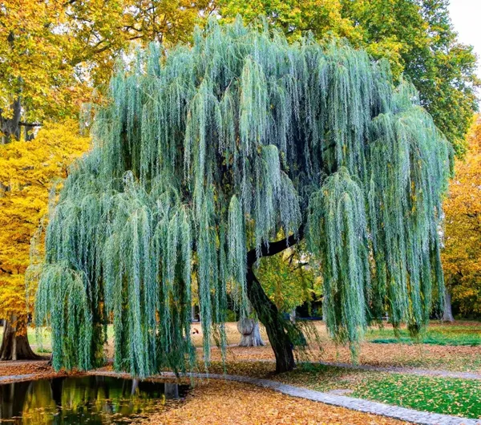
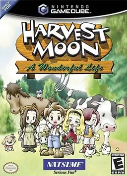
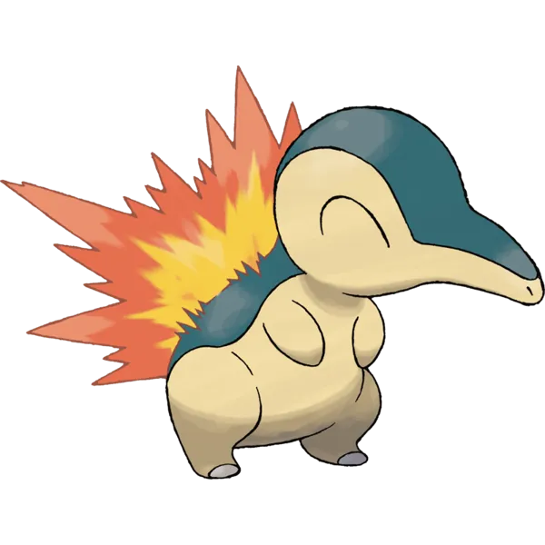
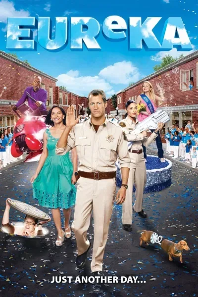


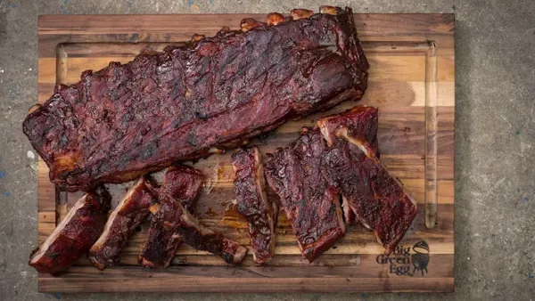
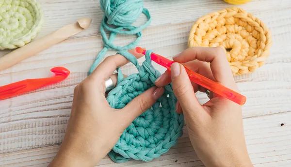
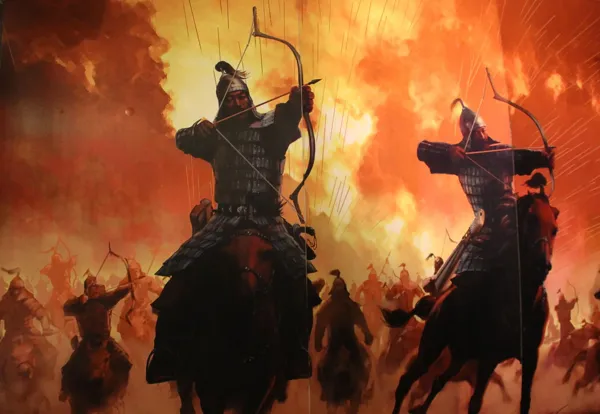
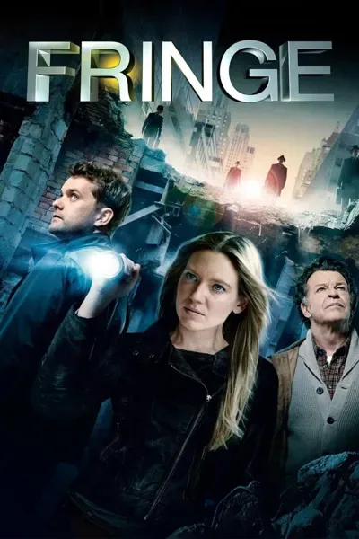

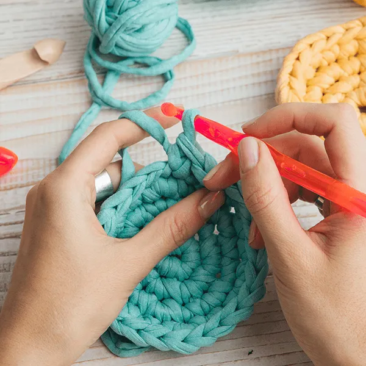
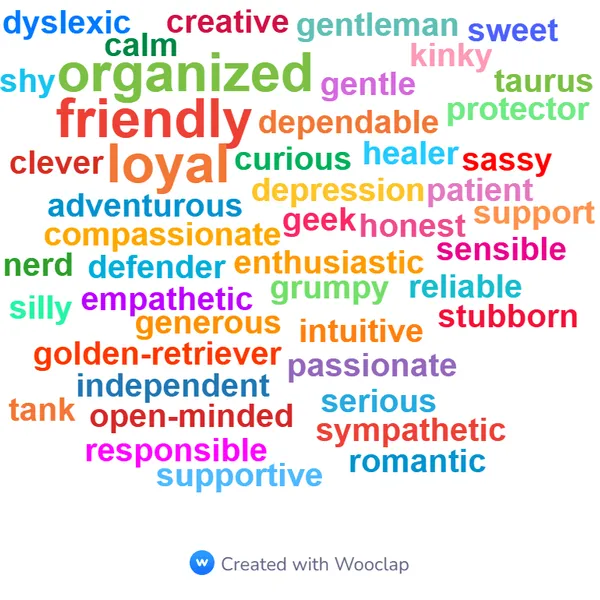
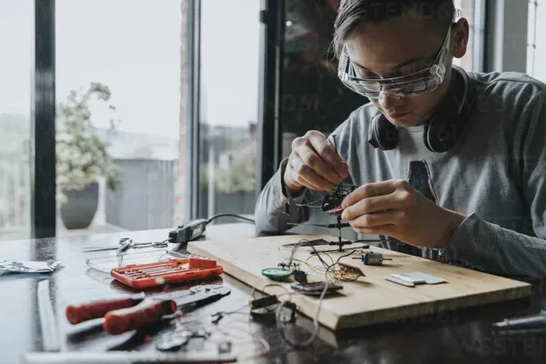
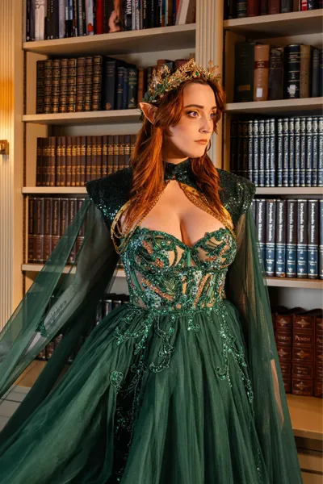
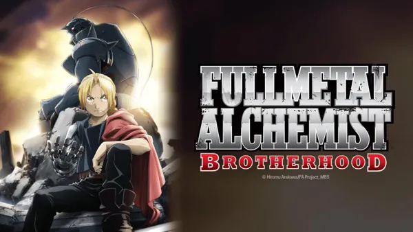
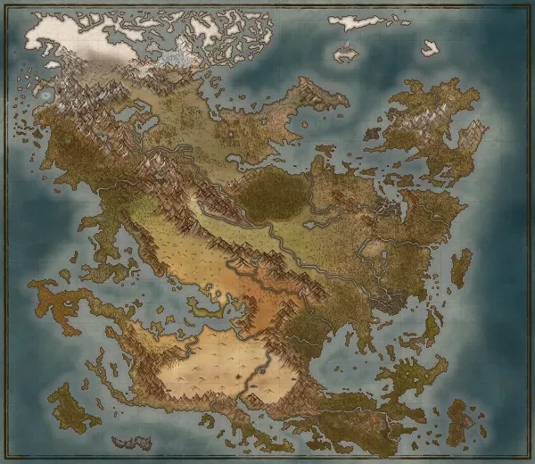
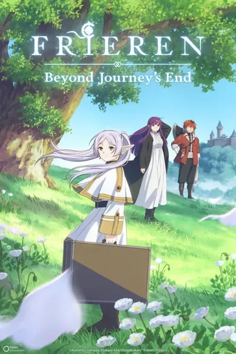

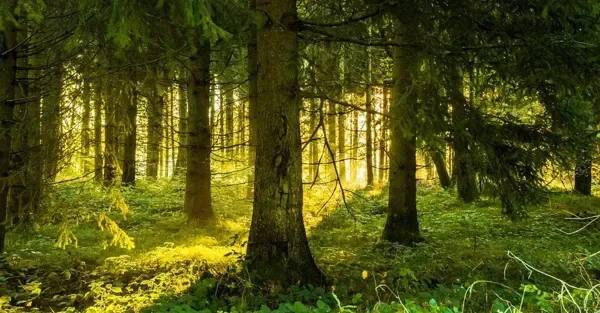

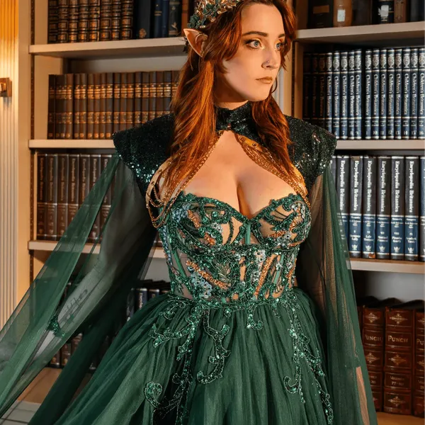
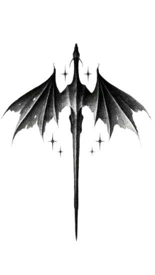
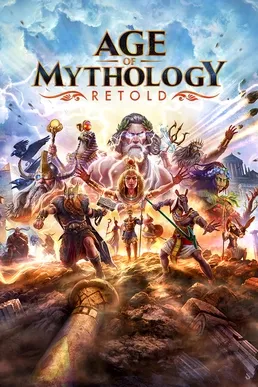
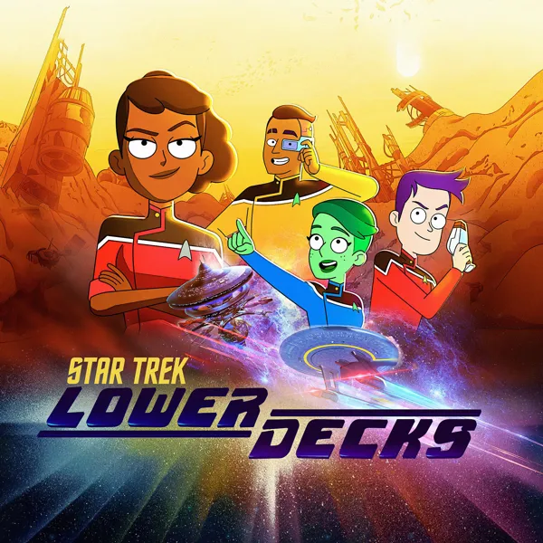
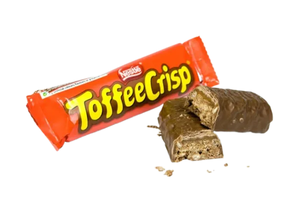
What Dating Me Could Look Like 🔗
A peek at "boyfriend mode" — the little things I love doing for the person I'm with. There is no 'bare minimum' with me, only princess treatment! 👑
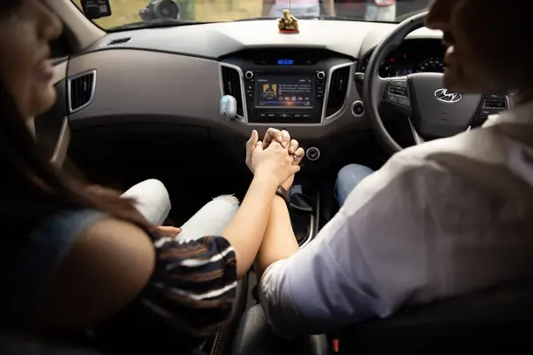
What I'm Looking For in My Player 2 for Life! 🔗
No previous experience required. Just curiosity, good vibes, and a willingness to get stuck in — below are just a few things my perfect partner might have!
What The Role Involves
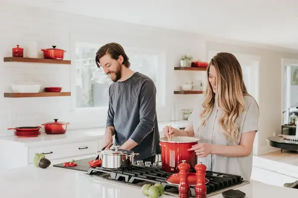
⚡ Suggested Previous Experience
A plus, not a prerequisite — on-the-job experience is provided.
🛑 Dealbreakers (Dating Preferences)
Everyone has preferences, and to avoid disappointment, here are my bare minimum requirements. It's not you, it's me 😞 (Tap any chip to see why!)
💍 The Contract
- 💍 Permanent, monogamous role
- 🤗 Salary paid in snacks and hugs
- ✈️ Paid holidays (okay, we might need to split the bill)
- 🎁 Bonuses paid out on birthdays, anniversaries, and special occasions
- 🚗 Company car (passenger princess privileges included)
- 🐾 Pet-friendly workspace
- ☕ Unlimited tea allowance
- 🛋️ Flexible working — sometimes the sofa, sometimes the summit of a mountain
- 🚨 24/7 Priority Emergency Contact privileges
- ✨ …and so much more — check out the Boyfriend Mode Extras 👆
Shoot Your Shot 🔗
💘 Ready to Shoot Your Shot?
You've made it this far! Do you want to shoot your shot?
I've worked to make this as easy as possible: Tell me your name, set your rough location, pick your adventure, answer a few ice breakers, and leave the rest to me!
👋 What is your name, adventurer?
So you're looking to go on an adventure with Alec! Before we set off, what should I call you?
📍 Where Do You Hail From?
Every great quest needs a starting point. Drop your rough location so I can plan the journey.
No tracking — I only see your location when you send the email.
🗺️ Pick Your Adventure
What kind of adventure would you like to go on? Pick as many as you like!
🧊 Lets break the ice
Nearly there! Answer a few ice breakers, hold the ones you like, shuffle the rest.
- If you had to pick a favourite god or goddess, who would it be and why?
- Cats, dogs, or something more exotic?
💌 Seal & Send
This is the message you will send:

Everything Else About Me 🔗
Get to know me
Hobbies & Interests
DLC - Bonus content
Thanks for Getting This Far! 🔗
If you've liked what you've seen, please reach out — I'd love to hear from you and put together a fun first date.